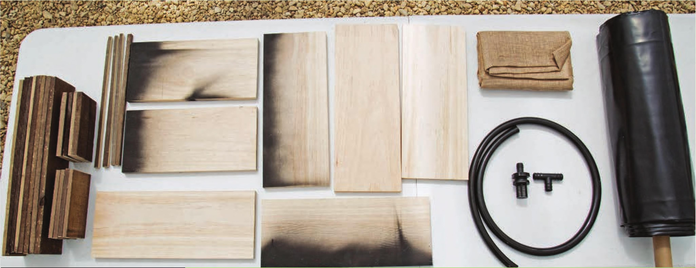
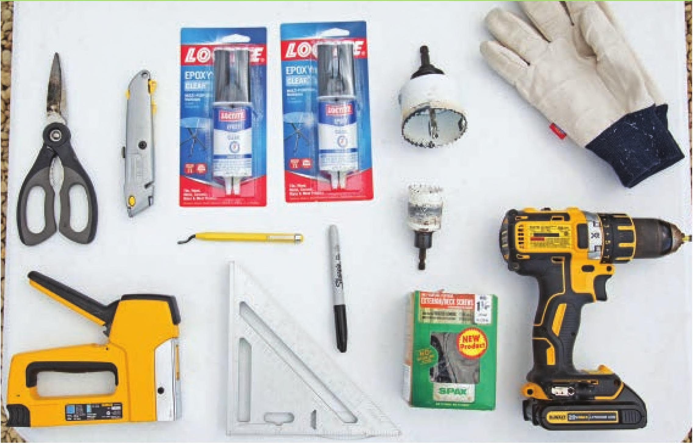

HOW TO BUILD A HYDROPONIC WICKING BED The wicking bed shown in this chapter is purely hydroponic but do not feel limited to these substrates. Try your own modifications; worst-case scenario, you take out the substrate and try again. MATERIALS & TOOLS Frame 2 1 x 8" x 8' pine whitewood board (actual dimensions VC x JVC x 96") 5 Vi x 4" x 4' weathered hardwood board 1 lb. #8 x 1 VC exterior screws 1 lb. #8 x VC wood screws 1 6 x 100' black 6 mil. plastic sheeting 2' VC black vinyl tube 1 VC fill/drain fitting with screen 1 VC tee 1 2x6' burlap Safety Equipment Substrate Tools Work gloves 10 L Expanded clay pellets Circular saw Step drill bit with VC Eye protection 2 cu. ft. Coco coir chips Rafter square Level increments from VC to 1 VC Optional Drill 2" hole saw drill bit Chalkboard paint Drill bit matching screws Staple gun and staples Paintbrush Tape measure Heavy-duty scissors Quick-set clear epoxy Permanent marker Sawhorses with clamps Chalk \VC hole saw drill bit Razor blade knife 62 DIY HYDROPONIC GARDENS

